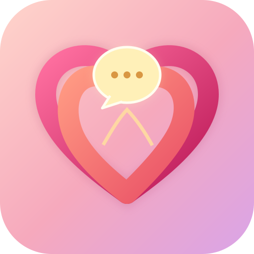

بين قلبين
BEIN QALBEIN PRO
الكلمات الجميلة تصنع حياة أجمل
اختر هويتك
♛
أنا زوج
♡
أنا زوجة
لغة الواجهة
العربية
English (واجهة أساسية)
Français (واجهة أساسية)
اختر التصنيف المناسب
رسالة من القلب
اختر تصنيفاً لتظهر لك رسالة جميلة هنا.
♥
↗ مشاركة
☆ أضف للمفضلة
⟳ رسالة أخرى
▢ نسخ الرسالة
رسائلك المفضلة
✦
عرض المفضلة
إخفاء المفضلة
رسائل مودة واحترام ودعم، بكلمات راقية ومحتوى مناسب.